건축설비기사 (2016-10-01 기출문제)
1과목: 건축일반
1. 사무실 배치방식에서 오피스 랜드스케이프에 관한 설명으로 옳지 않은 것은?
- 바닥면적을 효율적으로 사용할 수 있다.
- 변화하는 작업의 패턴에 따라 신속하게 대처할 수 있다.
- 소음 등으로 분위기가 산만해질 수 있다.
- 독립성과 쾌적감의 이점이 있다.
(정답률: 91%)

2. 건축공간의 모듈러 코디네이션(M.C)에 관한 설명 중 옳지 않은 것은?
- 설계작업이 단순하고 간편하다.
- 대량생산이 용이하고 생산비용이 낮아진다.
- 상이한 형태의 집단을 이루는 경향이 많다.
- 현장작업이 단순해지고 공기가 단축된다.
(정답률: 94%)
3. 병실 구성에 관한 설명으로 옳지 않은 것은?
- 병실 내부에는 반사율이 큰 마감재료는 피한다.
- 병실 출입문은 밖여닫이로 하며, 그 폭은 최대 90cm로 한다.
- 환자마다 옷장 및 테이블 설비를 하는 것이 좋다.
- 침대의 방향은 환자의 눈이 창과 직면하지 않도록 하여 환자의 눈이 부시지 않게 한다.
(정답률: 93%)
4. 풍력환기가 일어나고 있는 실에서 어느 개구부의 풍압계수가 0.3이라고 할 때, 풍압계수 0.3의 의미로 가장 정확한 것은?
- 외부풍의 전압(全壓)의 3%가 풍압력으로 가해진다.
- 외부풍의 전압(全壓)의 30%가 풍압력으로 가해진다.
- 외부풍의 동압(動壓)의 3%가 풍압력으로 가해진다.
- 외부풍의 동압(動壓)의 30%가 풍압력으로 가해진다.
(정답률: 72%)
5. 파트의 평면 형식에 관한 설명으로 옳은 것은?
- 편복도형은 복도가 폐쇄형이므로 각호의 통풍 및 채광이 좋지 않다.
- 중복도형은 독립성은 좋으나 부지의 이용률이 낮다.
- 집중형은 통풍, 채광 조건이 좋아 기계적 환경조절이 필요하지 않다.
- 계단실형은 동선이 짧으므로 출입이 편하며 독립성이 좋다.
(정답률: 87%)
6. 트러스 구조에 관한 설명으로 옳지 않은 것은?
- 절점은 강절점으로 부재를 삼각형으로 구성하여야 한다.
- 접합부 설계는 접합부에 모이는 각 부재의 중심선을 1점으로 교차시켜야 한다.
- 압축력이 작용하는 부재는 짧게, 인장력이 작용하는 부재는 길게 설계하는 것이 좋다.
- 입체 트러스는 큰 간사이 구조에 이용되지만, 구조해석이 어려운 단점이 있다.
(정답률: 62%)
7. 바닥충격음의 저감방법으로 옳지 않은 것은?
- 카펫, 발포비닐계 바닥재 등 유연한 바닥 마감재를 사용하여 피크 충격력을 작게 한다.
- 바닥 슬래브의 중량을 감소시켜 충격에 대한 바닥의 진동을 감소시킨다.
- 바닥 슬래브의 두께를 증가시켜 바닥 슬래브의 면밀도와 강성 모두를 높인다.
- 질량이 있는 구조체를 탄성재로 지지하는 공진계의 특성을 이용하여 진동전달을 줄인다.
(정답률: 89%)
8. 아치 구조에 관한 설명으로 옳지 않은 것은?
- 상부에서 오는 수직압력이 아치 축선을 따라 직압력만으로 전달하게 한 것이다.
- 조적조에서는 환기구멍 등의 작은 문꼴이라도 아치를 트는 것이 원칙이다.
- 창문너비 3m 정도는 특별한 보강없이 평아치로 한다.
- 부재의 하부에 인장력이 생기지 않도록 한 구조이다.
(정답률: 76%)
9. 상점계획에 관한 설명으로 옳지 않은 것은?
- 고객의 동선을 원활하게 한다.
- 고객의 동선은 짧게, 점원의 동선은 길게 한다.
- 대면판매형식은 일반적으로 시계, 귀금속, 카메라, 화장품 상점 등에서 활용된다.
- 상점의 총 면적이란 일반적으로 건축면적 가운데 영업을 목적으로 사용되는 면적을 말한다.
(정답률: 92%)
10. 건축화 조명의 종류에 속하지 않는 것은?
- 광천장조명
- 밸런스조명
- 코브조명
- 국부조명
(정답률: 82%)
11. 모듈계획 시 공칭치수에 대한 정의로 옳은 것은?
- 제품치수 + 줄눈두께
- 제품치수 - 줄눈두께
- 모듈치수 + 줄눈두께
- 모듈치수 - 줄눈두께
(정답률: 67%)
12. 상점의 파사드(facade) 구성과 관련된 5가지 광고요소에 해당되지 않는 것은?
- Imagination
- Attention
- Desire
- Momory
(정답률: 84%)
13. 다음 중 실내의 잔향시간과 가장 관계가 먼 것은?
- 실용적
- 실내 표면적
- 실의 평균 흡음율
- 실의 형태
(정답률: 64%)
14. 실내조명 설계에서 가장 우선적으로 검토해야 하는 것은?
- 개략적인 조명계산을 실시한다.
- 소요조도를 결정한다.
- 소요전등의 개수를 결정한다.
- 조명방식 및 조명기구를 선정한다.
(정답률: 88%)
15. 철골구조물에서 데크플레이트(Deck plate)가 사용되는 구조부는?
- 주각부
- 바닥판
- 보
- 트러스
(정답률: 80%)
16. 철골철근콘크리트 구조(SRC조)에 관한 설명으로 옳지 않은 것은?
- 철골구조에 비해 시공이 다소 복잡한 편이다.
- 구조설계상 기둥이 SRC조 이면서 보는 철골조로 배치하는 등 혼합시스템으로 설계할 수 있다.
- 단면상 원형구조물로 설계가 불가능한 단점이 있다.
- 철골부재의 좌굴을 콘크리트에 의해 방지하는 효과가 있다.
(정답률: 74%)
17. 철골구조 접합부에 관한 설명으로 옳지 않은 것은?
- 반강접합 접합부에 작용하는 부재력은 축방향력, 전단력만으로 구성된다.
- 핀접합 접합부에 작용하는 부재력은 축방향력과 전단력이다.
- 일반적으로 가장 강하게 설계하는 접합방법은 강접합이다.
- 강접합 접합부에 작용하는 부재력은 축방향력, 전단력, 모멘트로 구성된다.
(정답률: 62%)
18. 대학 도서관의 기능별 규모배분에서 가장 큰 면적이 할당되는 부분은?
- 열람실
- 서고
- 공용공간
- 행정 및 서비스시설
(정답률: 81%)
19. 아파트의 발코니 계획에 관한 설명 중 옳지 않은 것은?
- 일광욕, 침구 ㆍ 세탁물 등의 건조장 등으로 이용된다.
- 단위주거와의 관계와 평면, 입면상의 형태에 따라 그유형을 분류할 수 있다.
- 조망을 위한 발판시설을 설치하는 것이 좋다.
- 옆집과의 격벽은 비상시에 옆집과 연결이 될 수 있는 구조로 하는 것이 좋다.
(정답률: 81%)
20. 왕대공 지붕틀에서 ㅅ자보와 빗대공의 재축교점에서 수직으로 대어 ㅅ자보와 평보를 연결한 것을 무엇이라하는가?
- 처마도리
- 보잡이
- 달대공
- 귀잡이보
(정답률: 61%)
2과목: 위생설비
21. 배수배관의 구배가 증가하면 발생되는 현상으로 옳지 않은 것은?
- 유속이 증가한다.
- 유수깊이가 감소한다.
- 트랩의 봉수파괴에 영향을 미친다.
- 배수 중 오물이 뜨는 현상이 발생한다.
(정답률: 63%)
22. 중앙급탕방식 중 간접가열식에 관한 설명으로 옳지 않은 것은?
- 고압보일러를 설치하여야 한다.
- 보일러를 난방과 겸용으로 이용할 수 있다.
- 보일러 내부에 스케일 발생의 우려가 적다.
- 저탕조 용량이 충분할 경우 보일러 용량을 작게 할수 있다.
(정답률: 82%)
23. 다음 중 유량선도를 이용한 급수관의 관경 결정순서에서 가장 먼저 이루어지는 사항은?
- 관 재료의 결정
- 순간 최대유량의 산정
- 관로의 상당길이 산정
- 허용마찰손실수두 계산
(정답률: 63%)
24. 다음은 옥외소화전설비의 수원에 관한 설명이다. ( ) 안에 알맞은 것은?
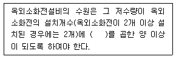
- 1.6m3
- 2.6m3
- 5m3
- 7m3
(정답률: 72%)
25. 세정밸브식(Flush Valve) 대변기에 관한 설명으로 옳지 않은 것은?
- 세정시의 소음이 크다.
- 세정용 탱크가 필요 없다.
- 역류방지기(Vacuum Breaker)가 필요하다.
- 낮은 수압(30kPa 이하)에서도 사용이 용이하다.
(정답률: 80%)
26. 정화조의 유입수 BOD가 1,000mg/L, 방류수 BOD가 400mg/L일 때, BOD제거율은?
- 40%
- 50%
- 60%
- 70%
(정답률: 86%)
27. 관로의 마찰손실에 관한 설명으로 옳지 않은 것은?
- 유속이 빠를수록 관로의 마찰손실은 커진다.
- 관로의 길이가 길수록 관로의 마찰손실은 커진다.
- 유체의 밀도가 클수록 관로의 마찰손실은 작아진다.
- 관로의 내경이 클수록 관로의 마찰손실은 작아진다.
(정답률: 80%)
28. 급수방식 중 고가탱크방식에 관한 설명으로 옳은 것은?
- 급수압력의 변동이 심하다.
- 대규모 급수 수요에 대처가 어렵다.
- 물탱크에서 물이 오염될 가능성이 있다.
- 일반적으로 상향급수 배관방식이 사용된다.
(정답률: 84%)
29. 양수펌프에서 유량이 2배로 증가하고 양정이 30%감소하였다면 축동력의 변화량은?
- 10% 증가
- 20% 증가
- 30% 증가
- 40% 증가
(정답률: 48%)
30. 가스사용시설에서 가스계량기와 화기 사이에 유지하여야 하는 최소 거리는? (단, 그 시설 안에서 사용하는 자체화기는 제외)
- 30cm
- 60cm
- 1m
- 2m
(정답률: 60%)
31. 배수 및 통기설비에 관한 설명으로 옳지 않은 것은?
- 세탁기, 식기세척기 등은 간접 배수로 한다.
- 트랩의 형식 중 2중 트랩은 설치가 간편하고 성능이 우수하다.
- 차고의 배수는 가솔린 트랩을 설치하고 단독 통기관을 설치한다.
- 배수수직관의 상부는 연장하여 신정통기관으로 사용하며, 대기 중에 개구한다.
(정답률: 78%)
32. 60℃의 물 150L와 10℃의 물 70L를 혼합시켰을 때 혼합된 물의 온도는?
- 약 34℃
- 약 44℃
- 약 54℃
- 약 64℃
(정답률: 78%)
33. 다음 중 워터해머의 방지 대책과 가장 거리가 먼 것은?
- 워터해머흡수기를 적절하게 설치한다.
- 관내의 수압이 평상시 높아지지 않도록 구획한다.
- 배관은 가능한 한 직선이 되지 않고 우회하도록 계획한다.
- 수압이 0.4MPa을 초과하는 계통에는 감압밸브를 부착하여 적절한 압력으로 감압한다.
(정답률: 84%)
34. 급탕설비에서 팽창관을 설치하는 가장 주된 이유는?
- 급탕온도를 일정하게 유지하기 위하여
- 온도변화에 따른 급탕배관의 신축을 흡수하기 위하여
- 저탕조 내의 온도가 100℃를 넘지 않도록 하기 위하여
- 보일러, 저탕조 등 밀폐 가열장치내의 압력상승을 도피시키기 위하여
(정답률: 68%)
35. 다음의 밸브 중 유체의 유량 조절 목적으로 사용이 가장 곤란한 것은?
- 앵글 밸브
- 게이트 밸브
- 글로브 밸브
- 버터플라이 밸브
(정답률: 60%)
36. 통기관의 최소 관경에 관한 설명으로 옳지 않은 것은?
- 각개통기관은 그것이 접속되는 배수관 관경의 1/2 이상으로 한다.
- 결합통기관은 통기수직관과 배수수직관 중 작은 쪽의 관경 이상으로 한다.
- 도피통기관은 배수수평지관의 관경 이상으로 하되 최소 75mm 이상으로 한다.
- 루프통기관은 배수수평지관과 통기수직관 중 작은 쪽관경의 1/2 이상으로 한다.
(정답률: 68%)
37. 다음 그림에서 Ⓐ부분의 통기관의 명칭은?
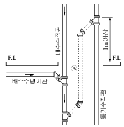
- 각개 통기관
- 신정 통기관
- 회로 통기관
- 결합 통기관
(정답률: 87%)
38. 내식성 및 가공성이 우수하며 배관 두께별로 K, L, M형으로 구분하여 사용되는 배관 재료는?
- 동관
- 스테인리스 강관
- 일반배관용 탄소강관
- 압력배관용 탄소강관
(정답률: 81%)
39. 지름이 D1인 관 A와 지름 D2인 관 B에 동일 유량이 흐를 때, 두 관의 지름비 D2/D1를 유속으로 옳게 표현한 것은? (단, v1은 A관 내의 유속, v2는 B관 내의 유속이다.)
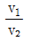
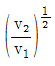
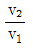
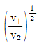
(정답률: 58%)
40. 스프링클러설비에서 직접 또는 수직배관을 통하여 가지배관에 급수하는 배관은?
- 주배관
- 신축배관
- 교차배관
- 급수배관
(정답률: 71%)
3과목: 공기조화설비
41. 몰리에르(Mollier)선도를 나타낸 그림에서 히트펌프의 난방시 성적계수를 산정하는 식은?
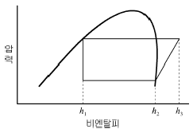
- h2-h1/h3-h2
- h3-h1/h3-h2
- h3-h1/h2-h1
- h3-h2/h2-h1
(정답률: 54%)
42. 다음 중 건물병 증후군(sick building syndrome)의 원인과 가장 관계가 먼 것은?
- 라돈
- 피톤치드
- 포름알데히드
- 휘발성 유기화합물
(정답률: 82%)
43. 건축물의 환기설비계획에 관한 설명으로 옳지 않은 것은?
- 파이프 샤프트는 공간절약을 위해 환기덕트로 이용한다.
- 외기도입구는 가급적 도로에서 떨어진 위치에 설치한다.
- CO2제어방식으로 급기량을 조절하는 경우 거실의 필요환기량을 확보한다.
- 공장 등에서 자연환기로 다량의 환기량을 얻고자 할 경우 벤틸레이터 등을 지붕에 설치한다.
(정답률: 71%)
44. 취출구와 흡입구가 지나치게 근접해 있을 때 취출구에서 나온 기류가 곧바로 흡입구로 들어가는 현상은?
- 숏 서킷
- 드래프트
- 에어 커튼
- 리턴 에어
(정답률: 63%)
45. 다음의 공기조화방식 중 중앙방식에 속하지 않는 것은?
- 수방식
- 냉매방식
- 전공기방식
- 공기 ㆍ 수방식
(정답률: 74%)
46. 기온 ㆍ 습도 ㆍ 기류의 3요소의 조합에 의한 실내 온열 감각을 기온의 척도로 나타낸 것은?
- 등가온도
- 작용온도
- 불쾌지수
- 유효온도
(정답률: 86%)
47. 유리창을 통과하는 전열량에 관한 설명으로 옳지 않은 것은?
- 반사율이 클수록 전열량은 작아진다.
- 일사에 의한 복사열량과 관류열량의 합이다.
- 전열량은 유리의 열관류율이 클수록 크게 된다.
- 일사취득열량은 유리창의 차폐계수에 반비례한다.
(정답률: 72%)
48. 용량이 386kW인 터보 냉동기에 순환되는 냉수량은? (단, 냉각기 입구의 냉수온도 12℃, 출구의 냉수온도 6℃, 물의 비열 4.2kJ/kg ㆍ K)
- 약 46m3/h
- 약 55m3/h
- 약 231m3/h
- 약 332m3/h
(정답률: 66%)
49. 냉각탑에 관한 설명으로 옳지 않은 것은?
- 냉각수를 보충하는 것은 증발 및 비산 때문이다.
- 냉각탑 내에 충전재를 설치하는 이유는 냉각 효율을 높이기 위한 것이다.
- 냉각탑은 냉동기의 발생열을 냉각수를 이용하여 외부로 방출하는 기기이다.
- 직교류형이란 떨어지는 냉각수와 공기흐름이 서로 마주보고 흐르는 방식이다.
(정답률: 68%)
50. 다음 설명에 알맞은 취출구의 종류는?
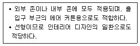
- 노즐(nozzle)형
- 캄 라인(calm line)형
- 아네모스탯(annemostat)형
- 라이트 트로퍼(light troffer)형
(정답률: 71%)
51. 냉동기의 구성기기 중 냉각수를 필요로 하는 것은?
- 압축기
- 흡수기
- 증발기
- 팽창밸브
(정답률: 50%)
52. 다음 중 냉각수 배관재료로 가장 부적절한 것은?
- 동관
- 아연도강관
- 스테인리스관
- 경질염화비닐관
(정답률: 82%)
53. 냉온수코일에서 바이패스팩터(BF)와 콘택트팩터(CF)의 관계식으로 옳은 것은?
- (BF+CF)=1
- (CF-BF)=1
- (BF+CF)>1
- (BF+CF)<1
(정답률: 70%)
54. 다음의 덕트에서 (1)점의 풍속 V1=14m/s, 정압 PS1=50Pa, (2)점의 풍속V2=6m/s, 정압 PS2=100Pa일 때, (1), (2)점 간의 전압 손실은? (단, 공기의 밀도는 1.2kg/m3이다)
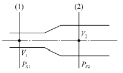
- 46Pa
- 94Pa
- 142Pa
- 190Pa
(정답률: 52%)
55. 난방배관의 신축을 흡수하기 위해 사용되는 신축이 음쇠에 속하지 않는 것은?
- 루프형
- 리프트형
- 슬리브형
- 스위블형
(정답률: 73%)
56. 다음의 공조방식 중 재실인원이 적은 실에서 운전비가 가장 적게 드는 방식은?
- 팬코일 유닛방식
- 정풍량 2중 덕트방식
- 변풍량 2중 덕트방식
- 정풍량 단일 덕트방식
(정답률: 70%)
57. 증기를 온열매로 하는 공기조화 계통에 관한 설명으로 옳지 않은 것은?
- 응축수에 의한 열손실이 크다.
- 고온수 방식에 비해 용량제어가 쉽고 배관수명이 길다.
- 보일러의 물을 가열증발시켜 그 증발잠열을 이용하는 방법이다.
- 고온수 방식에 비해 예열시간이 짧고 간헐난방에 대한 추종성이 좋다.
(정답률: 66%)
58. 히트펌프에 관한 설명으로 옳지 않은 것은?
- 신재생에너지인 지열을 이용하여 냉난방하는 경우 사용이 가능하다.
- 냉동기와 히트펌프는 본질적으로 같은 것이지만 그 사용목적에 따라 호칭이 달라진다.
- 히트펌프는 보일러에서와 같은 연소를 수반하지 않으므로 대기오염물질의 배출이 없다.
- 냉각을 목적으로 사용할 경우에는 가열을 목적으로 할 때보다 성적계수가 1만큼 더 크다.
(정답률: 71%)
59. 습공기선도상에서 2가지의 상태값을 알더라도 습공기의 상태를 알 수 없는 경우가 있다. 이와 같은 상태값의 조합은?
- 건구온도와 습구온도
- 습구온도와 상대습도
- 건구온도와 상대습도
- 절대습도와 수증기분압
(정답률: 65%)
60. 온도환수방법 중 각 방열기가 동일 배관저항을 갖게하기 위한 것은?
- 역환수식
- 중력환수식
- 기계환수식
- 직접환수식
(정답률: 88%)
4과목: 소방 및 전기설비
61. 건축물의 주위를 적당한 간격의 그물눈을 가진 도체로 새장과 같이 감싸는 피뢰방식은?
- 돌침방식
- 케이지 방식
- 수직도체방식
- 수평도체방식
(정답률: 82%)
62. 다음 중 안정기와 점등관이 필요한 것은?
- BL전구
- 형광등
- 백열전구
- 할로겐전구
(정답률: 73%)
63. 다음 설명에 알맞은 법칙은?
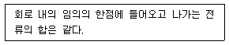
- 렌쯔의 법칙
- 오옴의 법칙
- 플레밍의 오른손 법칙
- 키르히호프의 제1법칙
(정답률: 77%)
64. 전기 부하에 인가되는 전압이 증가될 때 허용되는 내압의 범위 내에서 함께 증가되는 것은?
- 주파수
- 허용전력
- 소비전력
- 전압강하
(정답률: 56%)
65. 다음 설명에 알맞은 전동기는?
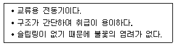
- 분권전동기
- 타여자전동기
- 농형유도전동기
- 권선형유도전동기
(정답률: 78%)
66. 다음 설명에 알맞은 배선 공사는?
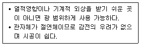
- 금속관 공사
- 버스덕트 공사
- 플로어덕트 공사
- 합성수지관 공사(CD관 제외)
(정답률: 79%)
67. 전기력선의 성질에 관한 설명으로 옳지 않은 것은?
- 2개의 전기력선은 교차하지 않는다.
- 전기력선은 등전위면과 교차하지 않는다.
- 전기력선은 정(正)전하에서 부(負)전하로 들어간다.
- 전기력선의 접선 방향은 그 점에서의 전기장의 방향과 일치한다.
(정답률: 56%)
68. 중유의 공급량을 변화시키면서 보일러의 온도를 300℃로 일정하게 유지하고자 할 경우, 이 온도는 자동제어의 용어 중 어느 것에 해당하는가?
- 외란
- 제어량
- 조작량
- 조작대상
(정답률: 68%)
69. 인터폰 설비의 접속방식에 따른 분류에 속하지 않는 것은?
- 모자식
- 상호식
- 교차식
- 복합식
(정답률: 61%)
70. 반도체를 사용한 무접점 시퀀스 제어 회로에 관한 설명으로 옳지 않은 것은?
- 동작 속도가 빠르다.
- 온도 변화에 약하다.
- 소형화가 불가능하다.
- 전기적 노이즈나 서어지에 약하다.
(정답률: 76%)
71. 영상변류기(ZCT)의 주된 사용목적은?
- 과전압 검출
- 과전류 검출
- 지락전류 검출
- 부하전류 검출
(정답률: 61%)
72. 인파 교류의 실효값이 V, 최대값이 Vm일 때 평균값은?
- Vm/2π
- 2Vm/π
- √2Vm/π
- Vm/π
(정답률: 57%)
73. 임피던스 전압강하 5[%]의 변압기가 운전 중 단락되었을 때 단락전류는 정격전류의 몇 배가 흐르는가?
- 20배
- 25배
- 30배
- 35배
(정답률: 47%)
74. 자동화재탐지설비의 감지기 중 불꽃감지기에 속하는 것은?
- 차동식
- 정온식
- 보상식
- 자외선식
(정답률: 70%)
75. 반경 10cm, 권수 100회인 원형코일의 중심에서의 자계의 세기가 200[AT/m]이었다. 이 때 코일에 흐른 전류는?
- 0.4[A]
- 0.8[A]
- 0.4π[A]
- 0.8π[A]
(정답률: 40%)
76. 다음 중 시퀀스제어의 적용이 가장 곤란한 것은?
- 팬의 기동/정지
- 엘리베이터의 기동/정지
- 공기조화기의 경보시스템
- 부스터 펌프의 압력 제어
(정답률: 69%)
77. 조명설비에서 광원에 의해 비춰진 면의 밝기 정도를 나타내는 용어는?
- 조도
- 광도
- 휘도
- 광속
(정답률: 76%)
78. 다음 중 1암페어를 바르게 정의한 것은?
- 1초당 6.24×106개의 자유전자의 이동
- 1초당 6.24×109의 자유전자의 이동
- 1초당 6.24×1012개의 자유전자의 이동
- 1초당 6.24×1018개의 자유전자의 이동
(정답률: 63%)
79. 3.3[kΩ]과 4.7[kΩ]저항을 직렬로 연결하였을 경우 합성저항은?
- 1.9[kΩ]
- 3.3[kΩ]
- 4.7[kΩ]
- 8[kΩ]
(정답률: 76%)
80. 유접점 시퀀스 제어 회로에서 접점의 개폐를 만드는 소자가 아닌 것은?
- 스위치
- 타이머
- 릴레이
- 다이오드
(정답률: 71%)
5과목: 건축설비관계법규
81. 신축 또는 리모델링하는 경우 시간당 최소 0.5회 이상의 환기가 이루어질 수 있도록 자연환기설비 또는 기계환기설비를 설치하여야 하는 공동주택의 세대수 기준은?
- 50세대 이상
- 100세대 이상
- 200세대 이상
- 300세대 이상
(정답률: 79%)
82. 건축물에 설치하는 굴뚝에 관한 기준 내용으로 옳지 않은 것은?
- 굴뚝의 옥상 돌출부는 지붕면으로부터의 수직 거리를 1m 이상으로 할 것
- 금속제 굴뚝은 목재 기타 가연재료로부터 10cm 이상 떨어져서 설치할 것
- 굴뚝의 상단으로부터 수평거리 1m 이내에 다른 건축물이 있는 경우에는 그 건축물의 처마보다 1m 이상 높게 할 것
- 금속제 굴뚝으로서 건축물의 지붕 속 ㆍ 반자위 및 가장 아랫바닥 밑에 있는 굴뚝의 부분은 금속 외의 불연재료로 덮을 것
(정답률: 70%)
83. 다음은 비상용승강기의 승강장 구조에 관한 기준 내용이다. ( ) 안에 알맞은 것은?
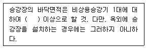
- 4m2
- 5m2
- 6m2
- 8m2
(정답률: 83%)
84. 건축법령상 의료시설에 속하는 것은?
- 한의원
- 요양병원
- 치과의원
- 동물병원
(정답률: 70%)
85. 건축물에 급수 ㆍ 배수 ㆍ 환기 ㆍ 난방설비를 설치하는 경우, 건축기계설비기술사 또는 공조냉동기계기술사의 협력을 받아야 하는 대상 건축물의 연면적 기준은? (단, 창고시설은 제외)
- 3,000m2이상
- 5,000m2이상
- 10,000m2이상
- 15,000m2이상
(정답률: 70%)
86. 건축법령상 리모델링이 쉬운 구조에 속하지 않는 것은? (단, 공동주택의 경우)
- 개별 세대 안에서 구획된 실의 크기, 개수 또는 위치 등을 변경할 수 있을 것
- 구조체에서 건축설비, 내부 마감재료 및 외부 마감재료를 분리할 수 있을 것
- 각 층에 시공된 보, 기둥 등의 구조부재의 개수 또는 위치를 변경할 수 있을 것
- 각 세대는 인접한 세대와 수직 또는 수평 방향으로 통합하거나 분할할 수 있을 것
(정답률: 76%)
87. 공동주택 중 아파트의 발코니에 설치하여야 하는 대피공간이 갖추어야 할 요건으로 옳지 않은 것은?
- 대피공간은 바깥의 공기와 접하지 않을 것
- 대피공간은 실내의 다른 부분과 방화구획으로 구획될것
- 대피공간의 바닥면적은 각 세대별로 설치하는 경우에는 2m2이상일 것
- 대피공간의 바닥면적은 인접 세대와 공동으로 설치하는 경우에는 3m2이상일 것
(정답률: 82%)
88. 건축물의 설비기준 등에 관한 규칙으로 정하는 기준에 따라 건축물의 거실(피난층의 거실 제외)에 배연설비를 하여야 하는 대상 건축물에 속하지 않는 것은? (단, 6층 이상인 건축물의 경우)
- 공동주택
- 운수시설
- 운동시설
- 위락시설
(정답률: 60%)
89. 다음은 지하층과 피난층 사이의 개방공간 설치에 관한 기준 내용이다. ( ) 안에 알맞은 것은?
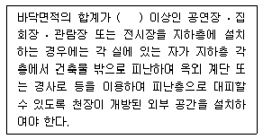
- 1,000m2
- 2,000m2
- 3,000m2
- 4,000m2
(정답률: 69%)
90. 공동주택의 거실에 설치하는 반자의 높이는 최소 얼마 이상으로 하여야 하는가?
- 1.8m
- 2.1m
- 2.4m
- 2.7m
(정답률: 78%)
91. 건축물의 용도변경시 허가 대상에 속하는 것은?
- 위락시설에서 발전시설로의 용도변경
- 교육연구시설에서 업무시설로의 용도변경
- 문화 및 집회시설에서 판매시설로의 용도변경
- 제1종 근린생활시설에서 업무시설로의 용도변경
(정답률: 57%)
92. 다음 중 건축물의 피난 ㆍ 방화구조 등의 기준에 관한 규칙상 거실의 용도에 따른 최소 조도 기준이 가장 높은것은? (단, 바닥에서 85cm의 높이에 있는 수평면의 조도)
- 집회(집회)
- 집무(설계)
- 작업(포장)
- 거주(독서)
(정답률: 73%)
93. 지하층 중 환기설비를 설치하여야 하는 층의 거실바닥면적 합계 기준으로 옳은 것은?
- 100m2이상
- 300m2이상
- 500m2이상
- 1,000m2이상
(정답률: 49%)
94. 다음의 소방시설 중 소화활동설비에 속하는 것은?
- 유도등
- 완강기
- 인명구조기구
- 비상콘센트설비
(정답률: 83%)
95. 다음은 건축물의 에너지절약 설계기준에 따른 설계용 실내온도 조건에 관한 설명이다. ( ) 안에 알맞은 것은?
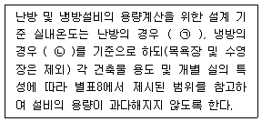
- ㉠ 20℃, ㉡ 25℃
- ㉠ 20℃, ㉡ 28℃
- ㉠ 22℃, ㉡ 25℃
- ㉠ 22℃, ㉡ 28℃
(정답률: 75%)
96. 다음은 특정소방대상물의 연결송수관설비 설치의 면제에 관한 기준 내용이다. ( ) 안에 포함되지 않는 설비는?
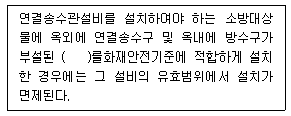
- 연결살수설비
- 옥내소화전설비
- 옥외소화전설비
- 스프링클러설비
(정답률: 49%)
97. 건축물의 에너지절약 설계기준상 다음과 같이 정의되는 용어는?
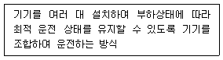
- 인버터운전
- 간헐제어운전
- 비례제어운전
- 대수분할운전
(정답률: 81%)
98. 다음 중 다중이용건축물에 속하지 않는 것은? (단, 16층 미만인 건축물)
- 종교시설로 쓰는 바닥면적의 합계가 5,000m2 이상인 건축물
- 판매시설로 쓰는 바닥면적의 합계가 5,000m2 이상인 건축물
- 업무시설로 쓰는 바닥면적의 합계가 5,000m2 이상인 건축물
- 의료시설 중 종합병원으로 쓰는 바닥면적의 합계가 5,000m2 이상인 건축물
(정답률: 76%)
99. 다음은 화재예방, 소방시설 설치 ㆍ 유지 및 안전관리에 관한 법령에 따른 무창층의 정의이다. 밑줄 친 “각 목의 요건”의 내용으로 옳지 않은 것은?
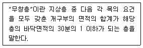
- 외부에서 쉽게 부수거나 열 수 없을 것
- 도로 또는 차량이 진입할 수 있는 빈터를 향할 것
- 크기는 지름 50cm 이상의 원이 내접할 수 있는 크기일 것
- 해당 층의 바닥면으로부터 개구부 밑부분까지의 높이가 1.2m 이내일 것
(정답률: 80%)
100. 비상조명등을 설치하여야 하는 특정소방대상물 기준으로 옳은 것은? (단, 창고시설 중 창고 및 하역장, 위험물 저장 및 처리시설 중 가스시설은 제외)
- 지하층을 포함하는 층수가 3층 이상인 건축물로서 연면적 2,000m2 이상인 것
- 지하층을 포함하는 층수가 3층 이상인 건축물로서 연면적 3,000m2 이상인 것
- 지하층을 포함하는 층수가 5층 이상인 건축물로서 연면적 2,000m2 이상인 것
- 지하층을 포함하는 층수가 5층 이상인 건축물로서 연면적 3,000m2 이상인 것
(정답률: 60%)
오피스 랜드스케이프는 사무실 내부를 효율적으로 활용하면서도 직원들의 창의성과 생산성을 높이기 위한 방식입니다. 이를 통해 독립성과 쾌적감을 높일 수 있습니다. 독립성은 개인적인 공간을 유지하면서도 협업을 할 수 있는 환경을 만들어줍니다. 쾌적감은 자연적인 요소를 활용하여 직원들의 건강과 행복을 증진시키는 것입니다. 이러한 이점들은 직원들의 업무 효율성과 만족도를 높이는 데 큰 역할을 합니다.